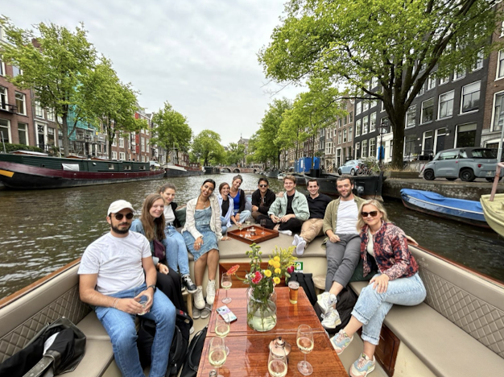
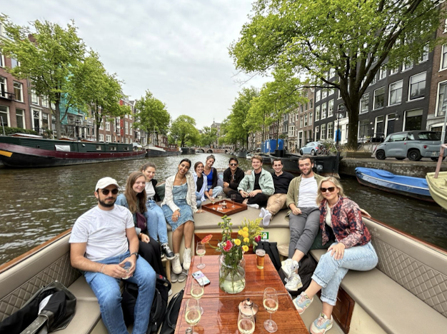

Alessio Are | Project Management Expert

 



About Alessio
Alessio Are is an experienced Project Management professional with a passion for delivering valuable outcomes by strategically connecting initiatives and people. With extensive experience in the project management domain, Alessio has a proven track record of driving successful outcomes across various industries. Fluent in multiple languages and certified in several project management methodologies, Alessio is dedicated to fostering transformative changes and future potentials in global business landscapes.
Project Management Experience
Alessio has played key roles in API integration across the world, connecting Tiqets to major booking platforms such as Bókun, ExperienceBank, and TourCMS. His experience as a Configuration Specialist at Tiqets involves onboarding, maintaining, and optimizing supply in regions such as Benelux, Southern & Central Europe, and the Nordics & Baltics. Additionally, Alessio has extensive project management and commercial experience working at Globalinternet. During this time, he was responsible for procuring and directing B2B internet access delivery in France & Benelux for customers like Cargill, Nestlé, Mars, Adidas, BASF, Mango, Inditex, Unilever, and Telefónica among others. Alessio's role involved coordinating the API integration in Europe with partners like T-mobile, Tele2, KPN, Ziggo, Orange, Free, SFR, Masmovil, Vodafone, British Telecom, Virgin, TalkTalk, and Colt among others. This experience showcases his ability to manage complex integrations and deliver high-quality solutions for major clients in various regions.
Certifications üèÜ


üìò PRINCE2¬Æ 2017 Practitioner
PRINCE2 (Projects IN Controlled Environments) is a structured project management method and practitioner certification program. It emphasizes dividing projects into manageable and controllable stages. It is globally recognized and widely used in both private and public sectors.
üìä Six Sigma Yellow Belt
The Six Sigma Yellow Belt certification introduces individuals to the concepts of Six Sigma, focusing on developing a deeper understanding of process improvement initiatives and enhancing overall quality. It is essential for those looking to contribute to their organization’s continuous improvement.
üìù Certified Associate in Project Management (CAPM¬Æ)
CAPM® is an entry-level certification designed for project practitioners. This certification is recognized globally and demonstrates a professional's ability to manage larger projects and gain additional responsibility.
üåç Additional Certifications
Specialized knowledge in Soft Skills, Emotional Intelligence, Tourism and Travel Management, Market Research, ISO 56002 Innovation Management, Design Thinking, Growth Marketing, Digital Marketing, and Consumer Insights, highlights Alessio's ability to understand and manage diverse aspects of business, enhancing his versatility and expertise in multiple domains.
Education üéì
Rome Business School - Master in Project Management
At Rome Business School, the Master's program in Project Management prepares students with essential managerial skills and specialized project management techniques. Here are the key modules:
- Managerial Core: Covers topics like managerial economics, business strategy, accounting, and budgeting, essential for foundational business planning and financial management.
- Project Management Specialization: Includes comprehensive training in project and operations management, business analysis, project planning, execution, monitoring, and control. Emphasis on project management software and agile methodologies like Kanban and SCRUM.
- Leadership and Ethical Practices: Focuses on international and ethical aspects of project management, including corporate social responsibility and professional conduct.
- Interpersonal Skills: Training in leadership, motivation, conflict management, and effective communication to enhance team and individual performance.
- Electives and Capstone Project: Electives in innovation, digitalization, and industry business excellence, culminating in a capstone project where students solve real-world business challenges.
Universidad Internacional de Valencia (VIU) - Master in Project Management
The Master’s program at VIU is tailored to manage projects in a dynamic, globalized business environment:
- Project Lifecycle Management: Detailed study of project initiation, planning, execution, monitoring, and closing phases.
- Advanced Project Management Techniques: Emphasis on risk management, resource allocation, and quality assurance.
- Global Business Environment: Understanding the integration of international standards and practices in project management.
- Professional Development: Preparation for PMI certifications, including PMP and CAPM, critical for advancing in project management.
Università della Valle d'Aosta - Bachelor's Degree in Languages and Communication for Tourism and Business
This program integrates language proficiency with communication skills tailored for the tourism and business sectors. Key courses include:
- Intercultural Communication: Strategies for effective communication across different cultures.
- Tourism Marketing: Techniques for promoting tourism destinations and services.
- Business Negotiation: Skills for negotiating in a competitive business environment.
- Event Management: Planning and managing large-scale events within the tourism industry.
Université Savoie Mont Blanc - Bachelor's Degree in Foreign Languages Applied (LEA) to Tourism, Business, and Communication
This degree emphasizes practical language skills applied in professional settings. Core courses include:
- Applied Language Studies: Advanced studies in language use in professional contexts.
- Corporate Communication: Techniques for effective corporate messaging and branding.
- International Business Strategies: Understanding global business dynamics and market entry strategies.
- Translation and Interpretation: Skills in translating and interpreting across languages in real-time business and tourism contexts.
Languages
References
K.B.
Alessio is a highly positive, enthusiastic and energetic person. In his time at Globalinternet he demonstrated to be a valueable team player who was able getting things done. He showed to be a keen learner and always willing to pick up new things. This how he got involved in a project to implement API’s with our providers. His fluency in various languages, attention to detail and good communication skills contributed largely to the success of the project. It was a pleasure working with Alessio.
R.R.
Alessio's procurement and sales support is excellent. Alessio's problem-solving skills, optimistic attitude, and work ethic impressed me over our two years together. Alessio was crucial to the operations department, always going above and beyond for his clients. He was a trusted team member who was always willing to answer inquiries and address concerns. Alessio was instrumental in the API project, which improved our company's efficiency and performance. Alessio's experience and meticulousness helped the project succeed. Alessio would be a valuable asset to any firm.
N.E.
I worked with Alessio at Globalinternet. Alessio was a pleasure to work with, always showing a positive attitude and enthusiasm. He is reliable and trustworthy, with a strong drive to deliver. Alessio was part of the pricing and delivery team who provided services to my customers, answering commercial proposals for internet solutions. Alessio would liaise with providers to get feasibility and pricing information at pre-sales stage. I appreciated his attention to details, especially when dealing with complex customer requirements. He was also in charge of managing the delivery of internet services ordered by customers. In various occasions, we worked together on difficult deliveries. Having a strong customer focus, Alessio was key to understand the issues and seek solutions with our suppliers to exceed customer expectations. I highly recommend Alessio for any business opportunity. His language skills are a valuable benefit, making him a strong asset for international companies. I wish Alessio all the best !
Susan Williams
Alessio’s expertise in project management is outstanding. He is a great team player who is always willing to go the extra mile to ensure the success of the project. His leadership skills and dedication are commendable.
Tom Brown
Alessio’s strategic approach to project management is impressive and effective. He consistently delivers high-quality results and is an excellent communicator. His ability to lead and motivate the team is truly exceptional.